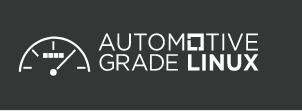
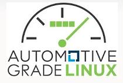
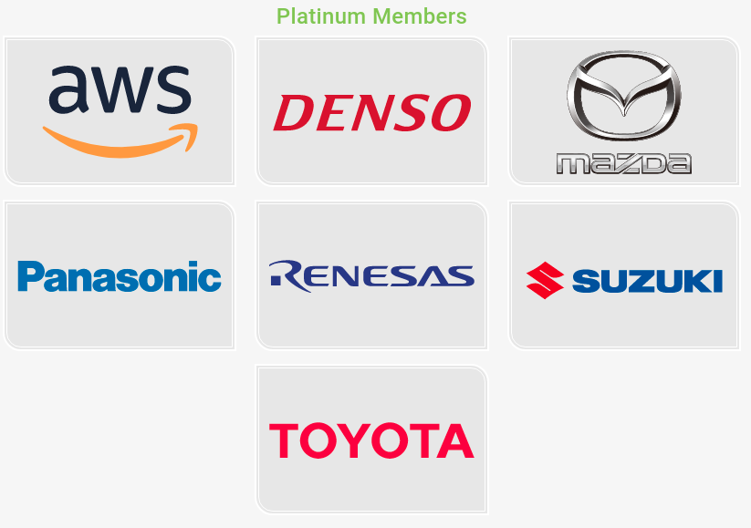
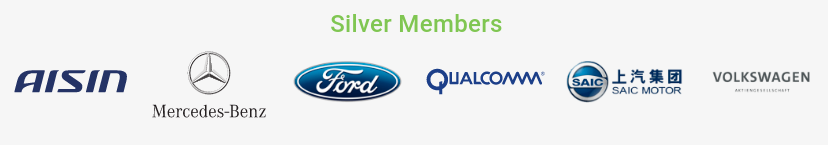
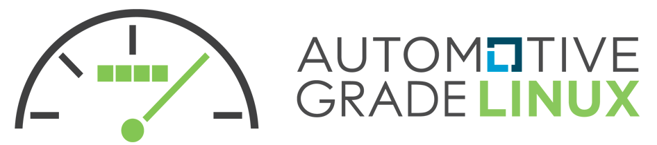

Automotive Grade Linux is a collaborative open source project that is bringing together automakers, suppliers and technology companies to accelerate the development and adoption of a fully open software stack for the connected car.

AGL is developing an open platform from the ground up that can serve as the de facto industry standard to enable rapid development of new features and technologies. Although initially focused on In-Vehicle-Infotainment (IVI), AGL is the only organization planning to address all software in the vehicle.

Automotive Grade Linux is a collaborative open source project that is bringing together automakers, suppliers and technology companies to accelerate the development and adoption of a fully open software stack for the connected car. The AGL platform is available to all, and anyone can participate in its development.
AGL provides 70% of the starting point for a production project and includes an operating system, middleware and application framework. Automakers and suppliers can customize the platform with features, services and branding to meet their unique product and customer needs.


Automotive Grade Linux is hosted at the Linux Foundation.
Learn more at automotivelinux.org.
Weekly Developer Meeting held on Tuesdays 13:00 UTC (6 am Pacific Standard Time and 10 pm JST)
